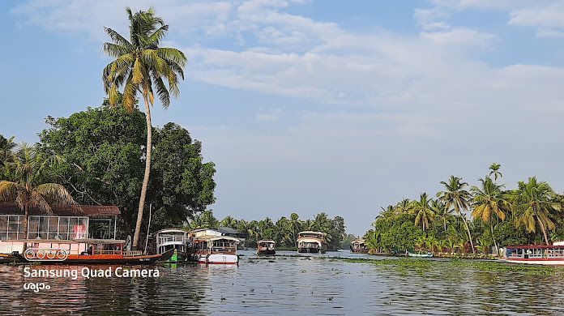

Marari Beach
Marari Beach sprawls across 55 acres of lawns, far-flung lotus ponds and whispering coconut groves, all threaded through with stone- flagged pathways.

Punnamada Lake
Punnamada Lake is an extension of Vembanad Lake in Alleppey. The lake is popular for hosting the very famous boat race called Nehru Trophy boat race.

Pathiramanal
Pathiramanal is a small beautiful island in Muhamma panchayat of Alappuzha district of Kerala , India. The name Pathiramanal means 'midnight sand'.